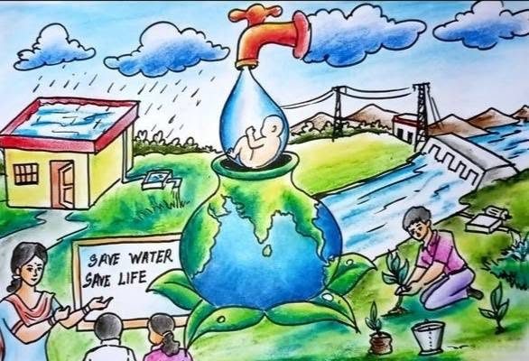

Water is very important for all living things. We use water for drinking, cooking, farming and cleaning. Water conservation means saving water and using it wisely so that it is available for future generations.

Clean water is limited. By saving water and avoiding wastage, we can help protect the environment and ensure enough water for everyone.